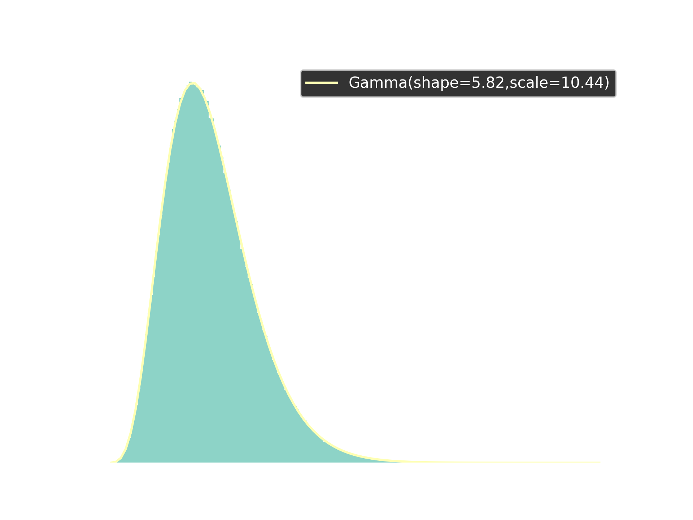

In this post we look at implementing SimPy’s Bank Renege example using Ciw. At a first glance this example is essentially an M/M/1 queue, but it has a couple of custom features. The first customized aspect is reneging customers with a uniformly-distributed reneging patience. See Bocquet 2005 for some discussion of basic queueing theory with reneging. The second aspect is that there is a fixed total number of customers.
Initially we could consider the arrivals to follow an exponential distribution
\[T_{\text{Arrivals}} \sim \text{Exponential} \left( \frac{1}{10} \right)\]
but since this will only be true for the first 5 customers we need a more customized distribution. Specifically
\[T_{\text{Arrivals}} \sim \begin{cases} \delta(\infty) & \text{Customers} \geq 5 \\ \text{Exponential} \left( \frac{1}{10} \right) & \text{Customers} < 5 \end{cases}\]
where \(\delta(\infty)\) denotes a Dirac delta distribution centered at infinity. You can consider this an abuse of notation that simply indicates that arrivals stop after 5 customers, or you could take a couple of distinct approaches: one defining this concept in terms of limits or the other in terms of the extended real numbers. We’ll just stick to it being an informal abuse of notation here. In Python we’ll define this as MaxArrivalDist:
"""A distribution that stops arrivals after a fixed count.
An M/M/1 queue normally has an unlimited stream of arrivals. The Bank Renege
example instead fixes the total number of customers at five. This distribution
wraps an ordinary inter-arrival distribution and returns a sample from it for
the first ``max_arrivals`` calls, then returns positive infinity so that no
further arrivals ever occur.
"""
from __future__ import annotations
from typing import Optional
import ciw
class MaxArrivalDist(ciw.dists.Distribution):
"""Limit the number of arrivals from an underlying distribution.
Attributes
----------
dist:
The underlying distribution used for sampling.
max_arrivals:
The maximum number of arrivals allowed.
arrival_count:
The current count of arrivals.
"""
def __init__(self, dist: ciw.dists.Distribution, max_arrivals: int = 5) -> None:
"""Initialise the distribution.
Parameters
----------
dist:
The underlying distribution to sample from.
max_arrivals:
The maximum number of arrivals allowed. Defaults to 5.
"""
self.dist = dist
self.max_arrivals = max_arrivals
self.arrival_count = 0
def sample(
self, t: Optional[float] = None, ind: Optional[ciw.Individual] = None
) -> float:
"""Sample from the underlying distribution, up to ``max_arrivals``.
Parameters
----------
t:
Optional time parameter.
ind:
Optional individual parameter representing the arrival.
Returns
-------
float
A sample from the underlying distribution, or positive infinity
once the maximum number of arrivals has been reached.
"""
if self.arrival_count < self.max_arrivals:
self.arrival_count += 1
return self.dist.sample()
return float("inf")Just so we don’t simulate for too much or too little time, we can also set the termination condition of our simulation to be the number of customers that have left the system (i.e. have received service and left). Following the Ciw guide How to Simulate For a Certain Number of Customers we can call the simulate_until_max_customers(5, method='Finish') method on an instance of Simulation to achieve this result. This way the current_time at the end of the simulation will be the amount of time for all five customers to sojourn.
The service distribution is just an exponential distribution:
\[T_{\text{Service}} \sim \text{Exponential} \left( \frac{1}{12} \right)\]
The reneging times for the customers will simply be according to a continuous uniform distribution:
\[T_{\text{Renege}} \sim \mathcal{U}_{[1,3]}.\]
Following Ciw guide How to Simulate Reneging Customers, we can simply pass in reneging_time_distributions=[ciw.dists.Uniform(1,3)].
"""The Bank Renege network and its simulation.
The model is an M/M/1 queue with two custom features:
* only five customers ever arrive, enforced by
:class:`~ciw_simpy_bank_renege.max_arrival.MaxArrivalDist`;
* waiting customers renege after a uniformly distributed patience time.
The simulation runs until five customers have *finished* (been served and left,
whether by service or by reneging), so the time at the end of the simulation is
the sojourn time for all five customers.
"""
from __future__ import annotations
import ciw
from ciw_simpy_bank_renege.max_arrival import MaxArrivalDist
arrival_rate = 1 / 10
service_rate = 1 / 12
max_customers = 5
reneging_time = (1, 3)
seed = 2018
def build_network() -> ciw.network.Network:
"""Return the Bank Renege network.
Returns
-------
ciw.network.Network
A single-server network with bounded arrivals and reneging.
"""
return ciw.create_network(
arrival_distributions=[
MaxArrivalDist(ciw.dists.Exponential(arrival_rate), max_customers)
],
service_distributions=[ciw.dists.Exponential(service_rate)],
number_of_servers=[1],
reneging_time_distributions=[ciw.dists.Uniform(*reneging_time)],
)
def run_simulation(random_seed: int = seed) -> ciw.Simulation:
"""Simulate until all five customers have left the system.
Parameters
----------
random_seed:
Seed for Ciw's random number generator, for repeatability.
Returns
-------
ciw.Simulation
The simulation after running to the finish of five customers.
"""
ciw.seed(random_seed)
network = build_network()
simulation = ciw.Simulation(network)
simulation.simulate_until_max_customers(max_customers, method="Finish")
return simulationHow long should we expect this simulation to take? According to queueing theory, such a system is stable if \(\rho \triangleq \frac{\lambda}{\mu} < 1\). In this case \(\lambda = \frac{1}{10}\) and \(\mu = \frac{1}{12}\) so \(\rho = \frac{6}{5} > 1\). But there actually is something importantly different from this classic theoretical setting: we know ahead of time we’re simulating for only 5 customers. So the theoretical concern of the length of the waitlist having unbounded asymptotic behaviour is not a concern here. That doesn’t mean that the distribution is easy to estimate. One cannot, for example, simply add the random variables to get the correct distribution as that would ignore that there is waiting time on the queue and that some of the customers will renege. Instead, we’ll simulate and record the simulation times that result.
"""Sample many Bank Renege run times and fit a Gamma distribution.
The post estimates the distribution of the time for all five customers to
sojourn by simulating many times and fitting a Gamma distribution to the
results. This module reproduces that experiment: sample, fit, histogram, and
overlay the fitted density.
"""
from __future__ import annotations
import matplotlib.pyplot as plt
import numpy as np
from scipy.stats import gamma
from ciw_simpy_bank_renege.network import build_network, max_customers, seed
n_simulations = 1_000_000
output_path = "figures/bank-renege-run-times.png"
def run_time(network) -> float:
"""Return the sojourn time for all five customers in one simulation.
Parameters
----------
network:
A network from
:func:`ciw_simpy_bank_renege.network.build_network`. Ciw copies the
network for each simulation, so it can be reused.
"""
import ciw
simulation = ciw.Simulation(network)
simulation.simulate_until_max_customers(max_customers, method="Finish")
return max(record.exit_date for record in simulation.get_all_records())
def sample_run_times(
n: int = n_simulations, random_seed: int = seed
) -> np.ndarray:
"""Return ``n`` simulated sojourn times.
Parameters
----------
n:
The number of simulations to run. Defaults to one million, as in the
post.
random_seed:
Seed for Ciw's random number generator.
Returns
-------
numpy.ndarray
The simulated sojourn times.
"""
import ciw
ciw.seed(random_seed)
network = build_network()
return np.array([run_time(network) for _ in range(n)])
def fit_gamma(x: np.ndarray):
"""Fit a Gamma distribution to ``x`` and return its parameters."""
return gamma.fit(x)
def plot_run_times(
x: np.ndarray,
output: str = output_path,
bins: int = 200,
) -> tuple:
"""Histogram the run times and overlay a fitted Gamma density.
Parameters
----------
x:
The simulated sojourn times.
output:
Where to save the figure.
bins:
Number of histogram bins.
Returns
-------
tuple
The fitted Gamma parameters ``(shape, loc, scale)``.
"""
plt.style.use("dark_background")
params = fit_gamma(x)
q = np.linspace(x.min(), x.max(), num=100)
p = gamma.pdf(q, *params)
plt.hist(x, density=True, bins=bins)
plt.plot(
q,
p,
label=f"Gamma(shape={np.round(params[0], 2)},scale={np.round(params[2], 2)})",
)
plt.xlabel("Simulation Time")
plt.ylabel("Density")
plt.legend()
plt.savefig(output, dpi=300, transparent=True)
plt.close()
return params
def main() -> None:
"""Simulate one million run times and save the fitted-density plot."""
x = sample_run_times()
plot_run_times(x)
if __name__ == "__main__":
main()The above code results in the plot:

You may be wondering how I knew that it would be a Gamma distribution that would fit so well to the simulation results. Honestly, I guessed. Gamma distributions ‘often’ give good approximations to time-to-event distributions, and happen to generalize some common waiting time distributions such as exponential distributions and Erlang distributions. Nonetheless, it is satisfying to see such a nearly-perfect fit to a relatively simple distribution.